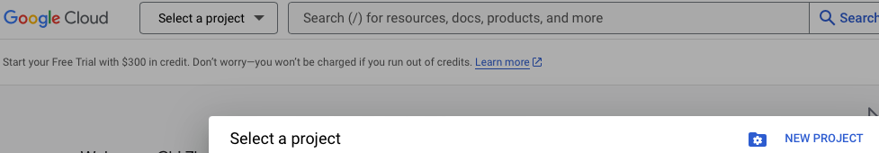
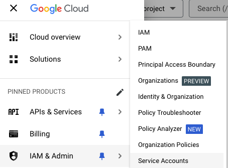
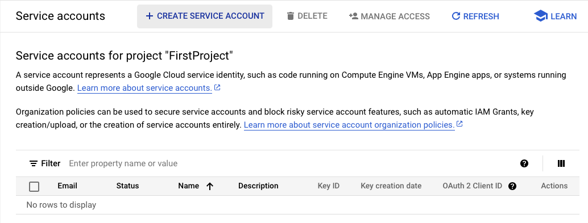
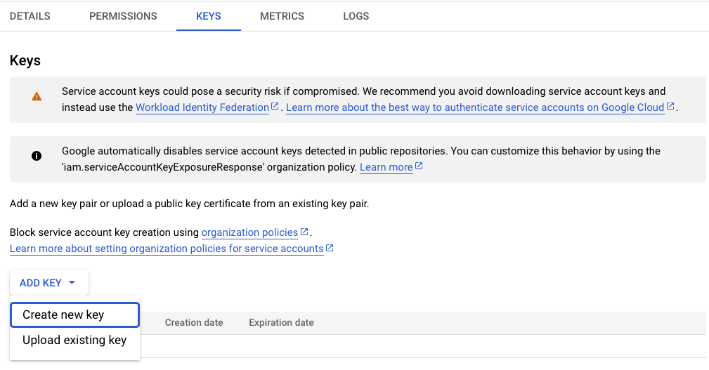
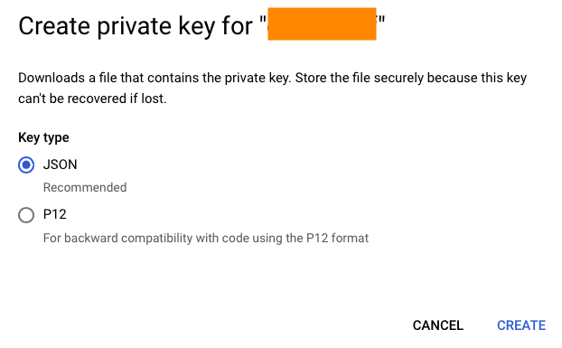
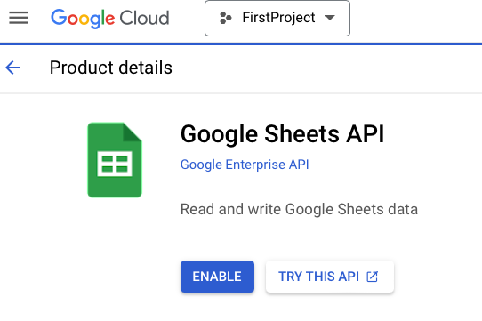
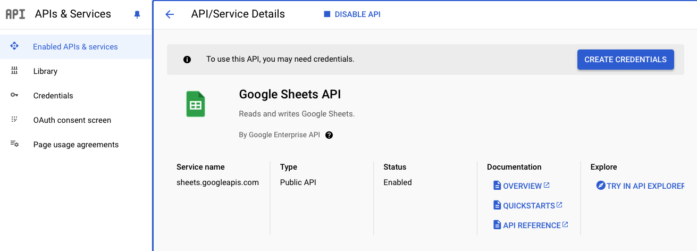
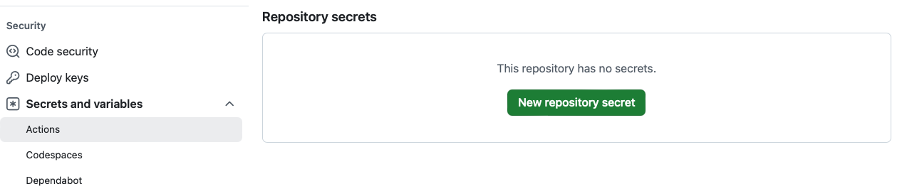

# for googledrive
drive_auth(path = 'path/to/my/service_token.json')
# for googlesheets4
gs4_auth(path = 'path/to/my/service_token.json')Automation with GitHub Action
Automation
As title
Resources
- Tutorial by David Keyes: How to use GitHub Actions with R to Run Code Automatically
- Tutorial by Mike O’Brien: Connecting Google Sheets and GitHub Actions
Step overview
- Create a folder,
.github - Create a subfolder,
workflows - Inside workflows, create
import-data.yaml. You do need other code in place. - Push changes
- Check Actions on GitHub repository
- Once finished, the changes should have been made to GH repo.
If you have saved some new data, then it would be important to pull the data back in your local repo.
Trouble shooting
- This is how I fixed the permission denied: workflow permissions
- Change the name for your own repository
Import and write public google sheet
This is an example of importing data from a public google sheet, run an R script and save it in the remote Github repository.
A YAML file placed in .github/workflows directory. Pay attention to the indentation!
on:
push:
branches: main
jobs:
import-data:
runs-on: ubuntu-latest
steps:
- name: Set up R
uses: r-lib/actions/setup-r@v2
- name: Install packages
uses: r-lib/actions/setup-r-dependencies@v2
with:
packages: |
any::tidyverse
any::googlesheets4
- name: Check out repository
uses: actions/checkout@v3
- name: Import data
run: Rscript -e 'source("import-data.R")'
- name: Commit results
run: |
git config --local user.email "actions@github.com"
git config --local user.name "GitHub Actions"
git add survey_data.rds
git commit -m 'Data updated' || echo "No changes to commit"
git push origin || echo "No changes to commit"Need to change the
user.emailanduser.nameto your own.
Triggers start GHA
Runs the action whenever code is pushed from main branch to GH.
on:
push:
branches: mainJobs
- Give a name to the task (
import-data) - let it run on a virtual machine that GH maintains
jobs:
import-data:
runs-on: ubuntu-latestAs this machine does not have anything installed, need to run some code to install the necessary softwares. This is where people copy and paste.
steps:
- name: Set up R
uses: r-lib/actions/setup-r@v2
- name: Install packages
uses: r-lib/actions/setup-r-dependencies@v2
with:
packages: |
any::tidyverse
any::googlesheets4Next, use it to check out the repository onto the virtual computer.
- name: Check out repository
uses: actions/checkout@v3Next, execute the code we wrote. Need to specify the right path.
- name: Import data
run: Rscript -e 'source("import-data.R")'Since the data is loaded on the remote virtual machine, we need to save it.
- name: Commit results
run: |
git config --local user.email "actions@github.com"
git config --local user.name "GitHub Actions"
git add survey_data.rds
git commit -m 'Data updated' || echo "No changes to commit"
git push origin || echo "No changes to commit"Import and write private google sheet
Based on Tutorial by Mike O’Brien: Connecting Google Sheets and GitHub Actions
It is necessary to have correct authentication if I connect with my own private google sheet. The following steps are required:
1. Google Cloud Platform
- Go to Google Cloud Platform: https://console.cloud.google.com. Use the correct account.
- Create a new project

2. Service account token
- Click the navigation menu, and select “IAM & Admin”, then “Service Accounts”.

- At the top, next to “Service accounts” select “+ CREATE SERVICE ACCOUNT”.

- Add a name (I suggest something somewhat descriptive) and the “Service account ID” section will autofill. Add a description if you desire.
- Click “DONE”.
- Click your newly-created service account and go to the “KEYS” tab.

- Click “ADD KEY”, “Create new key”, select “JSON”, then “CREATE”.

This will download a file. Pay attention to where it goes!
3. Turn on Google sheet from GCP project
- Click the menu, “API & Services”
- Search for Google Sheets in the search bar. It does not appear: you need to search for it.
- Select “Google Sheets API”
- “ENABLE”

Once this is done, it should appear under API/Service Details.

5. Add token to GitHub Action secrets
- Go to GitHub repository that you want to house the GHA.
- Settings
- Security -> “Secrets and variables” -> Actions

- Copy and paste the text in the downloaded file (json). Give it a name
- Add secret
6. Code in R
On my own computer: save the service token file somewhere safe, then refer to it.
For GHA: change it to Sys.getenv('NAME_OF_MY_SECRET')
gs4_auth(path = Sys.getenv('NAME_OF_MY_SECRET'))7. GitHub Actions
Add the environment variable, give it a name. I call it GOOGLE_SHEET
jobs:
import-data: # my job name
runs-on: ubuntu-latest
env:
GOOGLE_PAT: ${{ secrets.GOOGLE_SHEET }}The token is stored in a variable GOOGLE_SHEET in the server. Now when writing the following command in the R script below, it will be using the one without manual configuration.
gs4_auth(path = Sys.getenv('GOOGLE_SHEET'))